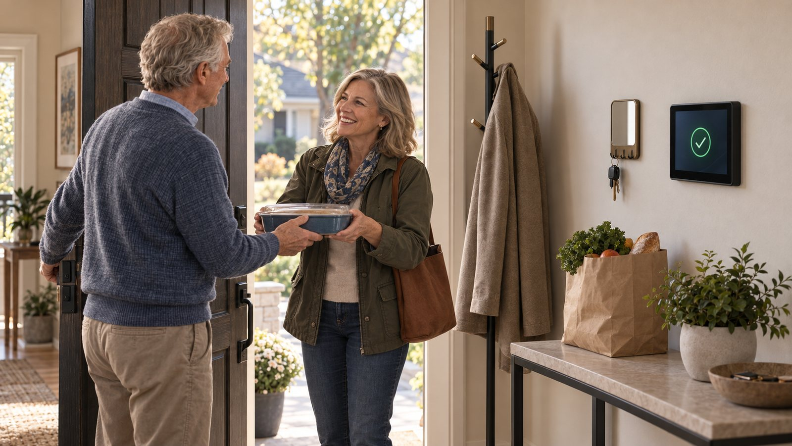

Story One · Ron and Maya at Home
The Sandwich Generation
The Sandwich Generation
Download chapterRon and Maya at Home
Download full storyMaya is 44, works full time, has two kids, and is helping her dad, Ron, stay independent at home.
One morning she is inching through the school drop-off line, surrounded by brake lights, crossing guards, and kids spilling out of cars. Her son is asking if she knows where he left his water bottle. Someone behind her taps the horn. Then Ron’s name flashes across the dashboard.
She already knows why he is calling.
“Hey,” he says, a little unsure. “Are you coming over this afternoon?”
“Of course, Dad,” she says, watching the car ahead begin to move. “It’s Wednesday. I come by every Wednesday at three. I’ll see you then.”
It takes less than a minute. Her son is still talking. The line keeps moving. But for that minute, everything else has to wait.
Later, Maya is standing at the front of a conference room, walking her team through a budget, when her phone buzzes against the table. She glances down and sees a text from her sister: Can you pick up Dad tomorrow? I got stuck at work.
Before Maya has even finished reading, she knows what it means. Something has fallen through, and the loose end has landed with her again. She keeps presenting, makes a note in the margin, and tries to hold onto the number she was explaining. One more plan to change. One more thread to keep from slipping. One more detail that lives in Maya’s head because there is nowhere else for it to go.
That is what the burden actually feels like. Not one catastrophic collapse, but a life constantly broken open by small interruptions, repeated questions, shifting plans, and invisible follow-through. Maya is the one remembering, confirming, checking, adjusting, and stitching the day back together while trying to keep the rest of her own life moving.
And the tension of that moment in the car is not lost on Ron. He hears the slight strain in her voice. He notices the little signs. So he starts holding things back. He waits instead of asking. He keeps a question to himself. He decides not to mention the moment of confusion.
What begins as memory trouble slowly becomes something more painful: the feeling that needing help too often might make you a burden.
That is the burden we need to lift.